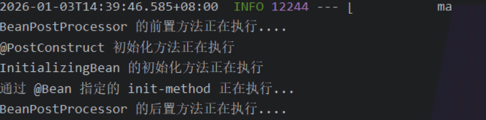

ssm
Spring
Spring 中常用注解总结
依赖注入
Component：通用的组件定义注解。
@Autowired：核心！ 自动按**类型（Type）注入依赖。
@Qualifier：当同一个接口有多个实现类时，配合 @Autowired 使用，按名称（Name）指定具体注入哪个。
@Resource（来自 JSR-250）：默认按名称注入，名称找不到再按类型。
Value：用于注入配置文件（application.properties）中的值。支持 SpEL 表达式，如 @Value("${user.name}")。
@Scope：设置 Bean 的作用域（singleton 单例、prototype 多例）。
Spring MVC 与 Web 开发
@RequestMapping：映射 URL 到控制器类或方法。快捷方式：@GetMapping、@PostMapping、@PutMapping、@DeleteMapping。
@RestController：@Controller + @ResponseBody 的组合。表示返回的是 JSON/XML 数据而非页面。
@RequestBody：获取请求体中的内容（通常是 JSON），并将其转为 Java 对象。
@RequestParam：获取 URL 查询参数（如 ?id=1）。
@PathVariable：获取 URL 路径中的变量（如 /user/{id}）。
@ResponseBody：将方法的返回结果直接写入 HTTP 响应体中。
配置与扫描 (Configuration)
@Configuration：声明当前类是一个配置类（相当于一个 XML 文件）。
@Bean：在配置类的方法上使用，将方法的返回值交给 Spring 容器管理。
@ComponentScan：@ComponentScan 的作用是告诉 Spring：“去哪些包下寻找标注了 @Component（及其派生注解如 @Service, @Controller 等）的类，并把它们注册为 Bean。”在普通的 Spring 项目中，你需要手动指定 basePackages。但在 Spring Boot 中，你通常看不到这个注解，因为它被封装在了 @SpringBootApplication 里面。如果你不指定路径，Spring Boot 会默认扫描启动类（Main Class）所在的包及其子包。
@Import：快速导入其他的配置类。
AOP 与 事务管理 (AOP & Transaction)
@Aspect：声明该类是一个切面类。
@Before / @After / @Around：定义通知（Advice），在目标方法执行前、后或环绕执行。
@Pointcut：定义切入点表达式。
@Transactional：最常用！ 声明式事务管理。可以标注在类或方法上，保证操作的原子性。
Spring Boot 特有注解
@SpringBootApplication：复合注解，包含 @SpringBootConfiguration、@EnableAutoConfiguration 和 @ComponentScan。
@EnableAutoConfiguration：开启 Spring Boot 的自动配置机制。
@Conditional 系列：条件装配。
@ConditionalOnProperty：当配置文件中存在某属性时才加载。@ConditionalOnClass：当类路径存在某类时才加载。@ConditionalOnMissingBean：当容器中没有某 Bean 时才加载（常用于默认配置）。
@ConfigurationProperties (属性映射)：将配置文件中以某个“前缀”开头的属性，自动映射绑定到 Java Bean 的字段上。
@EnableConfigurationProperties：告诉 Spring 容器，“去把指定的 @ConfigurationProperties 类注册成 Bean 并执行绑定”。
Spring 基础
1. 什么是 Spring | 谈谈你对 Spring 的理解！⭐️
Spring 是一个以 IoC 和 AOP 为核心的轻量级框架,它通过 IoC 实现了对象的解耦，通过 AOP 实现了业务逻辑与系统服务的解耦。
它最大的魅力在于‘不重复造轮子’，它提供了一个强大的容器，能无缝集成各类主流中间件，通过声明式开发极大提高了我们的开发效率。一句话总结：Spring 让复杂的 Java 开发变得优雅且简单。
Spring 的核心设计思想
- 非侵入式设计：业务代码不需要继承 Spring 的类或接口，代码可以脱离框架运行，极大降低了系统对框架的耦合度。
- 声明式编程：例如使用
@Transactional就能管理事务，而不需要手写繁琐的开启、提交、回滚逻辑。 - POJO 驱动：倡导使用普通的 Java 对象来构建应用，而不是复杂重量级的组件（如当年的 EJB）。这点 fastapi 真得学, 一会 sqlalchemy, 一会 pydantic, 烦人啊 !
- 一致性编程模型：无论你是操作 JDBC、Redis 还是发送 MQ，Spring 都提供了高度统一的模板（如
JdbcTemplate,RedisTemplate）。
2. Spring 包含哪些模块
“Spring 框架通过模块化设计实现了对开发全生命周期的覆盖。核心层（Core）利用 IoC 和 DI 负责 Bean 的创建与生命周期管理；AOP 模块通过面向切面编程实现了通用逻辑（如日志、权限）的解耦抽取；Web 模块提供了成熟的 MVC 架构来高效处理 HTTP 请求；而 Data 模块则极大简化了数据库交互并提供了强大的声明式事务支持。”

Core Container
Spring 框架的核心模块，也可以说是基础模块，主要提供 IoC 、依赖注入功能的支持。Spring 其他所有的功能基本都需要依赖于该模块
- spring-core：Spring 框架基本的核心工具类。
- spring-beans：提供对 bean 的创建、配置和管理等功能的支持。
- spring-context：提供对象生命周期管理、国际化、事件传播、资源加载等功能的支持。
- spring-expression：提供对表达式语言（Spring Expression Language） SpEL 的支持，只依赖于 core 模块，不依赖于其他模块，可以单独使用。
AOP
- spring-aspects：该模块为与 AspectJ 的集成提供支持。
- spring-aop：提供了面向切面的编程实现。
- spring-instrument：提供了为 JVM 添加代理（agent）的功能。 具体来讲，它为 Tomcat 提供了一个织入代理，能够为 Tomcat 传递类文 件，就像这些文件是被类加载器加载的一样。没有理解也没关系，这个模块的使用场景非常有限。
数据访问与集成 (Data Access / Integration)
- spring-jdbc：封装了枯燥的 JDBC 操作，自动处理资源释放。
- spring-tx：声明式事务管理的核心，支持编程式和声明式事务。
- spring-orm：集成 ORM 框架（如 Hibernate, JPA, MyBatis）。
- spring-oxm：支持对象与 XML 的映射。
Web 模块
- spring-web：提供基础的 Web 功能，如文件上传、HTTP 客户端等。
- spring-webmvc (Spring MVC)：包含 Spring 的 Model-View-Controller 实现，用于构建 Web 应用程序或 REST 服务。
- spring-websocket：提供了对 webSecket 的支持，WebSocket 可以让客户端和服务端进行双向通信。
Messaging
spring-messaging 是从 Spring4.0 开始新加入的一个模块，主要职责是为 Spring 框架集成一些基础的报文传送应用。
Spring-test
Spring 团队提倡测试驱动开发（TDD）。有了控制反转 (IoC)的帮助，单元测试和集成测试变得更简单。
3. Spring,Spring MVC,Spring Boot 之间什么关系?⭐️
1、spring 是一个企业级的 java 开发框架，有很多模块构成。Spring-Mvc 就是它的一个模块。 2、Spring-Mvc 是 Spring 中一个很重要的框架，主要赋予 Spring 快速构建 MVC 架构的 Web 程序的能力。 3、使用 Spring 进行开发各种配置过于麻烦比如开启某些 Spring 特性时，需要用 XML 或 Java 进行显式配置。于是，Spring Boot 诞生了！它通过“约定优于配置”的理念，解决了 Spring 配置过于麻烦的痛点，实现了自动配置和开箱即用。
4. Spring 框架中用到了哪些设计模式呢？⭐️
- 工厂设计模式 ：
Spring使用工厂模式通过BeanFactory、ApplicationContext创建bean对象。 - 代理设计模式：
Spring AOP功能的实现。 - 单例设计模式：
Spring中的 Bean 默认都是单例的。 - 模板方法模式 :
Spring中jdbcTemplate、hibernateTemplate等以 Template 结尾的对数据库操作的类，它们就使用到了模板模式。模板方法模式（Template Method Pattern） 就是在一个方法中定义一个算法的骨架，而将一些步骤的具体实现延迟到子类中。 - 适配器模式：
HandlerAdapter帮助DispathcerServlet适配不同类型的handler - 观察者模式：
Spring事件驱动模型就是观察者模式很经典的一个应用。 - 策略模式：
Spring在很多地方都提供了多种算法实现，让用户根据配置选择。例如Resource接口就是一个典型的抽象策略类，Spring 提供了FileSystemResource、UrlResource、ClassPathResource等多种实现策略。 - 责任链模式：拦截器 (Interceptor) 和 过滤器 (Filter)。
Spring Ioc
1.⭐️什么是 Spring Ioc
Ioc 即控制反转/反转控制。它是一种思想不是一个技术实现。描述的是：Java 开发领域对象的创建以及管理的问题。例如：现有类 A 依赖于 类 B
传统的开发方式 ：往往是在类 A 中手动通过 new 关键字来 new 一个 B 的对象出来
使用 IoC 思想的开发方式 ：不通过 new 关键字来创建对象，而是通过 IoC 容器(Spring 框架) 来帮助我们实例化对象。我们需要哪个对象，直接从 IoC 容器里面去取即可。 因此，我们失去了对对象操作的一些权力（创建、管理对象），但是也得到了很多的好处（不需要考虑对象的创建、管理等一系列事情）
2. 为什么叫控制反转
- 控制 ：指的是对象创建（实例化、管理）的权力
- 反转 ：控制权交给外部环境（IoC 容器）
3. Ioc解决了什么问题⭐️
- 解决对象间高度耦合的问题（核心）
- 解决资源零散、难以复用的问题
- 解决生命周期管理复杂的难题
4. 什么是 Spring Bean
简单来说，Bean 代指的就是那些被 IoC 容器所管理的对象。我们需要告诉 IoC 容器帮助我们管理哪些对象，这个是通过配置元数据来定义的。配置元数据可以是 XML 文件、注解或者 Java 配置类。
<!-- Constructor-arg with 'value' attribute -->
<bean id="..." class="...">
<constructor-arg value="..."/>
</bean>
5. 将一个类声明为 Bean 的注解有哪些？⭐️
@Component：通用的注解，可标注任意类为Spring组件。如果一个 Bean 不知道属于哪个层，可以使用@Component注解标注。@Repository: 对应持久层即 Dao 层，主要用于数据库相关操作。@Mapper：@Mapper注解就是告诉 MyBatis：“这个接口你需要帮我生成代理实现类”。@Service: 对应服务层，主要涉及一些复杂的逻辑，需要用到 Dao 层。@Controller: 对应 Spring MVC 控制层，主要用于接受用户请求并调用Service层返回数据给前端页面。@Configuration：配置类，主要用来做一些配置。
6. 为什么要分这么多注解？
- 代码可读性：看到注解，一眼就能看出这个类是干什么的（是调数据库的还是处理请求的）。
- 功能增强：比如
@Repository会开启异常转换，@Controller会被 Spring MVC 的扫描器特殊对待。
7. @Component 和 @Bean 的区别是什么
@Component注解作用于类，而@Bean注解作用于方法。@Component自动扫描。只要类上带了它，Spring 扫描到路径就会自动实例化。而@Bean方法必须手动new出对象并返回。该注解的作用可以理解为通知Ioc容器，我手动创建了某个对象（哪怕是别人的代码），请把它收进容器。”@Bean注解比@Component注解的自定义性更强，而且很多地方我们只能通过@Bean注解来注册 bean。比如当我们引用第三方库中的类需要装配到Spring容器时，则只能通过@Bean来实现。
8. 注入 Bean 的注解有哪些？
Spring 内置的 @Autowired 以及 JDK 内置的 @Resource 和 @Inject 都可以用于注入 Bean。
9. @Autowired 和 @Resource 的区别是什么？⭐️⭐️
@Autowired 是 Spring 内置的注解，默认注入逻辑为先按类型（byType）匹配，若存在多个同类型 Bean，则再尝试按名称（byName）筛选。
当一个接口存在多个实现类时：
- 若属性名与某个 Bean 的名称一致，则注入该 Bean；
- 若属性名与所有 Bean 名称都不匹配，会抛出
NoUniqueBeanDefinitionException，此时需要通过@Qualifier显式指定要注入的 Bean 名称。
@Resource 源自 JSR-250 规范（标准 Java 规范），在 JDK 6 到 JDK 10 中，它确实存在于 JDK 提供的包中。不过，从 JDK 11 开始，它不再默认存在于 JDK 内部，你需要引入额外的依赖 javax.annotation-api才能使用。Spring 对 @Resource 的处理逻辑如下：
- 先按照名称匹配（默认名称是要注入的变量的名称，也可以指定名称）
-
如果没找到，则再去按照类型匹配
- 找到一个 Bean：注入成功
- 找到 0 个：抛出异常 (
NoSuchBeanDefinitionException)。 - 找到 > 1
Bean：抛出异常 (NoUniqueBeanDefinitionException)。
-
@Autowired是 Spring 提供的注解，@Resource是 JDK 提供的注解。 Autowired默认的注入方式为byType（根据类型进行匹配），@Resource默认注入方式为byName（根据名称进行匹配）。- 当一个接口存在多个实现类的情况下，
@Autowired和@Resource都需要通过名称才能正确匹配到对应的 Bean。Autowired可以通过@Qualifier注解来显式指定名称，@Resource可以通过name属性来显式指定名称。 @Autowired支持在构造函数、方法、字段和参数上使用。@Resource主要用于字段和方法上的注入，不支持在构造函数或参数上使用。
10. 当使用 @AutoWired注入时候有多个匹配的 Bean，如何解决⭐️⭐️
在 Spring 的底层逻辑中，“包扫描到的 @Component” 和 “配置类里的 @Bean” 如果重名，不属于“冲突（Overriding）”，而属于“细化（Refining）”。
使用 @Qualifier 明确指定注入的依赖的名称
@Autowired
@Qualifier("userServiceImpl1") // 明确指定注入名为 userServiceImpl1 的 Bean
private UserService userService;
使用 @primary : 当通过 byType 在容器中找到多个 Bean，之后，会优先通过 byName 进行匹配，如果没找到，那么此时优先注入那个被 @primary 标注的 Bean。
@Component
@Primary // 设置为默认最高优先级
public class UserServiceImpl1 implements UserService { ... }
使用 @Resource 注解来注入, 本质还是明确的指定了要注入依赖的名称
// 想要根据 Bean 的 ID 直接“点名”获取。
@Resource(name = "userServiceImpl2") // 直接通过名字定位 private UserService userService;
11. 什么是依赖注入（DI）⭐️
依赖注入是实现控制反转（IoC）的一种具体手段。
“依赖注入就是把 IOC 容器里的 Bean，注入到需要使用它的那个类（组件）的成员变量中。”
“依赖注入是将对象之间的依赖关系，交给容器在运行期自动维护。也就是把 Bean 注入到依赖它的目标对象中。”
12. 注入 Bean 的方式有哪些？
- 构造函数注入：通过类的构造函数来注入依赖项。
- Setter 注入：通过类的 Setter 方法来注入依赖项。
- Field（字段） 注入：直接在类的字段上使用注解（如
@Autowired或@Resource）来注入依赖项。
@Service
public class UserService {
private final UserRepository userRepository;
public UserService(UserRepository userRepository) {
this.userRepository = userRepository;
}
//...
}
@Service
public class UserService {
private UserRepository userRepository;
// 在 Spring 4.3 及以后的版本，特定情况下 @Autowired 可以省略不写
@Autowired
public void setUserRepository(UserRepository userRepository) {
this.userRepository = userRepository;
}
//...
}
@Service
public class UserService {
@Autowired
private UserRepository userRepository;
//...
}
13. 构造函数注入有什么好处？⭐️⭐️
官方推荐构造函数注入，因为这种注入方式优点很多：
1. 依赖完整性：确保所有必需依赖在对象创建时就被注入，避免了空指针异常的风险。
2. 不可变性：可以使用 final 关键字，确保依赖在对象生命周期内不被篡改。
3. 完全脱离 IOC 容器测试：在编写单元测试时，可以直接 new 出来并传入 Mock 对象，不需要启动 Spring 容器。
14. @Autowired 的问题 ⭐️
- 隐藏依赖：看构造函数看不出这个类到底依赖了谁。
- 违背单一职责：因为字段注入太方便了，会导致一个类里注入几十个对象而不自知。
- 不反射很难手动注入依赖。
15. Bean 的作用域有哪些？⭐️
- singleton : IoC 容器中只有唯一的 bean 实例。Spring 中的 bean 默认都是单例的，是对单例设计模式的应用。
- prototype : 每次获取都会创建一个新的 bean 实例。也就是说，连续
getBean()两次，得到的是不同的 Bean 实例。 - request （仅 Web 应用可用）: 每一次 HTTP 请求都会产生一个新的 bean（请求 bean），该 bean 仅在当前 HTTP request 内有效。
- session （仅 Web 应用可用） : 每一次来自新 session 的 HTTP 请求都会产生一个新的 bean（会话 bean），该 bean 仅在当前 HTTP session 内有效。
- websocket （仅 Web 应用可用）：每一次 WebSocket 会话产生一个新的 bean。
配置 Bean 的作用域
<bean id="..." class="..." scope="singleton"></bean>
@Bean
@Scope(value = ConfigurableBeanFactory.SCOPE_PROTOTYPE)
public Person personPrototype() {
return new Person();
}
16. Bean 是线程安全的吗？⭐️
Spring 框架中的 Bean 是否线程安全，取决于其作用域和状态。
prototype 作用域下，每次获取都会创建一个新的 bean 实例，不存在资源竞争问题，所以不存在线程安全问题。singleton 作用域下，IoC 容器中只有唯一的 bean 实例，可能会存在资源竞争问题（取决于 Bean 是否有状态）。如果这个 bean 是有状态的话，那就存在线程安全问题（有状态 Bean 是指包含可变的成员变量的对象）。
17. Bean 的生命周期了解吗⭐️⭐️⭐️
Spring Bean的生命周期可以概括为四大阶段：实例化 → 属性赋值 → 初始化 → 销毁。但细节远不止这些，我们通过代码一步步拆解：
1、在实例化阶段，Ioc 容器会根据当前 Bean 的 BeanDefination，从而通过 java 反射 API 来创建 Bean 的实例。
2、Bean 属性赋值与依赖注入：为当前 Bean 的属性和相关依赖进行赋值，例如通过 @Autowired、@Resource 等注解注入依赖， @Value 注入值。
3、Bean 的初始化：这一步是Bean的“成人礼”，Spring提供了多种扩展点，具体如下：
（1）各种 Aware 接口回调：Spring 会检查 Bean 是否实现了一系列以 Aware 结尾的接口，并注入容器资源:
- BeanNameAware: 传入 Bean 的 ID。
- BeanFactoryAware: 传入当前的 Bean 工厂。
- ApplicationContextAware: 传入 Spring 上下文（最常用，让你能在代码里手动获取其他 Bean）。
（2）BeanPostProcessor 前置处理 (postProcessBeforeInitialization)：
（3）执行 @PostConstruct 注解标注的初始化方法
（4）如果 Bean 实现了InitializingBean接口，执行afterPropertiesSet()方法。
（5）如果 Bean 在定义中包含 init-method 属性，执行指定的方法。
（6）BeanPostProcessor 后置处理（postProcessAfterInitialization）:这是初始化最后一步。Spring AOP（动态代理）通常就是在这里发生的。Spring 会判断这个 Bean 是否需要切面增强，如果需要，就返回一个代理对象（Proxy）来替换原始对象。
和销毁阶段一样，排除后置处理器的前置与后置方法，还是按照注解 > 接口 > 配置的优先级来执行的

4、Bean 的销毁阶段：销毁并不是说要立马把 Bean 给销毁掉，而是把 Bean 的销毁方法先记录下来，将来需要销毁 Bean 或者销毁容器的时候，就调用这些方法去释放 Bean 所持有的资源。
先执行 @PreDestory 标注的方法，之后再去执行接口：DisposableBean 提供的 destory 方法，最后执行 @Bean 指定的 destroyMethod.
18. 为什么在销毁阶段提供了三个拓展点呢？
DisposableBean：Spring 早期提供的机制。现在不推荐使用，因为你的代码会和 Spring 框架的 API 强耦合。
@PreDestroy：最推荐。它是 Java 标准（Jakarta EE），代码侵入性小，不依赖 Spring 的接口。
destroy-method：适合第三方库的类。当你无法修改别人源码（无法加注解或实现接口）时，可以在配置类里通过这种方式指定销毁逻辑。
Spring Aop
1. 什么是 Aop，你对他的理解？⭐
AOP 实际上就是一种横向抽取机制，把散落在各个业务方法中的非业务代码（日志、事务、限流）给拎出来，放到一个地方统一管理。这样就实现了业务与非业务代码的解耦，同时非业务代码能够轻易的复用到其他地方，如果非业务代码的逻辑需要修改，也只需要修改一个地方。
Spring AOP 就是基于动态代理的，如果要代理的对象，实现了某个接口，那么 Spring AOP 会使用 JDK Proxy，去创建代理对象，而对于没有实现接口的对象，就无法使用 JDK Proxy 去进行代理了，这时候 Spring AOP 会使用 Cglib 生成一个被代理对象的子类来作为代理
2. AOP 的核心概念⭐️
| 术语 | 重新定义的含义 | 避坑提醒 |
|---|---|---|
| 目标对象 (Target) | 被通知 | 被代理原始对象 | 它是“毛坯房”，没有任何增强逻辑。 |
| 代理对象 (Proxy) | Spring 织入通知后生成的“代理” | 调用者拿到的是它。如果是 JDK 代理，它只拥有接口方法。 |
| 连接点 (JoinPoint) | 目标对象的所属类中，定义的所有方法均为连接点 | 重点： 虽然定义上说“所有方法”，但实际上 private、static、final 方法是无法被代理拦截的。 |
| 切入点 (Pointcut) | 被选中的连接点。即你通过表达式（如 execution）明确指定要增强的方法。 |
连接点是“候选人”，切入点是“当选者”。 |
| 通知 (Advice) | 要在切入点执行的增强逻辑（前置、后置、环绕等）。 | 解决“做什么”和“什么时候做”的问题。 |
| 切面 (Aspect) | 切入点 (Pointcut) + 通知 (Advice) 的结合体。 | 它是一个模块化的横切关注点（比如日志切面、事务切面）。 |
| 织入 (Weaving) | 将切面应用到目标对象并创建代理对象的过程。 | Spring AOP 在运行时通过动态代理完成织入。 |
织入的动作就是： Spring 容器启动时，发现某个类下边的某些方法符合切入点条件，于是它利用动态代理技术（JDK 或 CGLIB），把切面的逻辑“插”到业务代码的指定位置，并且产生一个代理对象（Proxy）。
3. Spring AOP 和 AspectJ AOP 有什么区别⭐️
| 维度 | Spring AOP | AspectJ AOP |
|---|---|---|
| 实现机制 | 动态代理：基于 JDK Proxy 或 CGLIB | 静态织入：通过修改字节码实现 |
| 织入时机 | 运行时 (Runtime) | 编译期、编译后或类加载期 |
| 功能强度 | 较弱：仅支持方法级别的拦截 | 强大：支持字段、构造函数、私有方法等 |
| 性能 | 稍逊：每次调用需经过代理和拦截器链 | 极高：增强代码直接“缝”入字节码，无代理开销 |
| 易用性 | 简单：与 Spring 容器无缝集成，开箱即用 | 复杂：需要专门的编译器（ajc）或 Agent 代理 |
在大多数 Spring 业务开发中，我们使用的是 “基于 AspectJ 注解风格的 Spring AOP”。也就是说，我们用了 AspectJ 的 @Aspect、@Before 等注解来方便定义切面，但底层运行时的实现仍然是 Spring AOP 的动态代理。
4. AOP 常见的通知类型有哪些？⭐

总结：Before、After、AfterReturing、AfterThrowing 这四种通知类型都是感知通知，也就是在特定时机，比如目标方法即将要被代理对象调用了，Spring 会通知一下，然后触发 @Before 通知，但它无法影响本次方法的执行。但 Around 能够拿到本次方法的控制权，它可以修改目标方法的入参，返回值等等。
5. 多个切面的执行顺序如何控制⭐⭐
使用 @Order 注解或实现 Ordered 接口。数值越小，优先级越高，逻辑越靠外层。
1、通常使用@Order 注解直接定义切面顺序
// 值越小优先级越高
@Order(3)
@Component
@Aspect
public class LoggingAspect implements Ordered
┌──────────────────────────────────────────┐
│ [Order(1)] 日志切面 (最外层) │
│ ┌────────────────────────────────────┐ │
│ │ [Order(2)] 缓存切面 │ │
│ │ ┌──────────────────────────────┐ │ │
│ │ │ 真正的业务方法 (Target) │ │ │
│ │ └──────────────────────────────┘ │ │
│ │ 缓存切面逻辑结束 │ │
│ └────────────────────────────────────┘ │
│ 日志切面逻辑结束 │
└──────────────────────────────────────────┘
2、实现Ordered 接口重写 getOrder 方法。
@Component
@Aspect
public class LoggingAspect implements Ordered {
// ....
@Override
public int getOrder() {
// 返回值越小优先级越高
return 1;
}
}
Spring Mvc
0. 什么是 Servlet
Servlet（Server Applet）是 Java 提供的一种标准和接口，专门用于处理来自客户端的 HTTP 请求并生成响应。
1. 说说自己对于 Spring MVC 了解?
MVC 是一种设计模式，Spring MVC 是一款很优秀的 MVC 框架。Spring MVC 可以帮助我们进行更简洁的 Web 层的开发，并且它天生与 Spring 框架集成。Spring MVC 下我们一般把后端项目分为 Service 层（处理业务）、Dao 层（数据库操作）、Entity 层（实体类）、Controller 层(控制层，返回数据给前台页面)。
Spring MVC 实际上是对 Servlet 的一种封装。它通过一个 DispatcherServlet 统一处理所有请求，避免了传统 Servlet 开发中需要写大量重复 doGet/doPost 的麻烦，让开发者能专注于业务逻辑的编写。
2. Spring MVC 的核心组件有哪些？⭐️
DispatcherServlet：核心的中央处理器，负责接受、分发请求，并给予客户端响应。HandlerMapping：处理器映射器，根据 URL 去匹配查找能处理的Handler，并会将请求涉及到的拦截器和Handler一起封装。HandlerAdapter：处理器适配器，根据HandlerMapping找到的Handler，适配执行对应的Handler；Handler：请求处理器，处理实际请求的处理器。ViewResolver：视图解析器，根据Handler返回的逻辑视图 / 视图，解析并渲染真正的视图，并传递给DispatcherServlet响应客户端
3. ⭐️SpringMVC 工作原理了解吗?

- 客户端（浏览器）发送请求
DispatcherServlet拦截请求. DispatcherServlet根据请求消息调用HandlerMapping会根据本次请求的url找到对应的handler，并会将请求涉及到的拦截器和Handler一起封装返回。DispatcherServlet调用HandlerAdapter适配器执行Handler。Handler完成对用户请求的处理后，会返回一个ModelAndView对象给DispatcherServlet，ModelAndView顾名思义，包含了数据模型以及相应的视图的信息。Model是返回的数据对象，View是个逻辑上的ViewDispatcherServlet将ModelAndView传给ViewReslover视图解析器ViewReslover解析后返回具体ViewDispaterServlet把返回的Model传给View（视图渲染）DispaterServlet会将视图响应给客户端
Spring MVC 还有一个重要的隐形组件叫 异常解析器。当 Controller 报错时，它会拦截异常，并决定是跳转到一个错误页面，还是返回一个包含错误信息的 JSON 格式。
但这一流程是传统开发模式（JSP，Thymeleaf 等）的工作原理。然而现在主流的开发方式是前后端分离，这种情况下 Spring MVC 的 View 概念发生了一些变化，由于 View 通常由前端框架（Vue, React 等）来处理，后端不再负责渲染页面，而是只负责提供数据。
4. 为什么找到了合适的处理器，还需要通过 HandlerAdapter 执行这些处理器呢？
Spring MVC 是一个极其灵活且高扩展性的框架，它支持多种完全不同风格的“处理器（Handler）”写法。
- 注解式处理器：也就是我们最常用的
@Controller加@RequestMapping - 实现接口式处理器：实现
org.springframework.web.servlet.mvc.Controller接口的类。 - 实现 Servlet 接口的类：你甚至可以直接把一个标准的
Servlet丢给 Spring MVC 当处理器。 - HttpRequestHandler：用于处理静态资源或特定的 HTTP 请求。
如果 DispatcherServlet 直接调用处理器，它就必须写一堆 if-else 来判断当前 Handler 是哪种类型，为了优化DispatcherServlet代码，Spring 引入了 适配器模式（Adapter Pattern）。
5. 统一异常处理怎么做⭐️
推荐使用注解的方式统一异常处理，具体会使用到 @ControllerAdvice + @ExceptionHandler 这两个注解 。
@ControllerAdvice：这是一个增强型的 @Component。它的作用是给所有的 Controller 织入异常处理的横切逻辑（类似于 AOP 的切面）。
@ExceptionHandler：标注在方法上，用于声明该方法负责处理哪种类型的异常。
6. Spring 内部异常(处理 404)如何处理？
首先， @ControllerAdvice + @ExceptionHandler 实现的全局异常处理只能捕获由 controller 抛出的异常，但是，存在一种情况，也就是还没进入 controller，就抛了异常，这样的异常是全局异常处理默认无法捕捉到的，那如何处理像这样的 Spring 内部错误呢？
在 Spring Boot 配置文件中开启如下配置，让 Spring 在找不到 Handler 时抛出异常，这样就能被全局处理器捕获了：
# 1. 告诉 DispatcherServlet：找不到映射时，请直接抛出 NoHandlerFoundException 异常
spring.mvc.throw-exception-if-no-handler-found=true
# 2. 必须关闭静态资源默认映射，否则所有的 URL 都会被静态资源处理器“拦截”尝试去查找文件 # 这样即便 URL 错了，它也只会认为“没找到文件”，而不会触发“找不到 Handler”的逻辑
spring.web.resources.add-mappings=false
7. 简述SpringMVC中如何返回JSON数据⭐️
在 Spring MVC 中，返回 JSON 数据主要依赖于 消息转换器（Message Converter） 机制。目前最主流的方式是使用 Jackson 库。
（1）核心就是我们标注了：@ResponseBody 或 @RestController
（2）之后，当 Spring 看到 @ResponseBody 时，它会调用 MappingJackson2HttpMessageConverter（如果类路径下存在 Jackson 依赖）。该转换器会自动调用 Jackson 的 ObjectMapper，将 Java 对象（POJO、Map、List等）序列化为 JSON 字符串。
如果你想控制 JSON 的输出（比如日期格式、忽略某些字段），可以使用 Jackson 提供的注解：
@JsonFormat(pattern = "yyyy-MM-dd")：格式化日期字段。@JsonIgnore：排除不需要返回给前端的字段（如密码）。@JsonProperty("user_name")：修改返回给前端的键名。
8. 自定义转换器
处理 Json 传参
public enum Gender {
MALE(0, "男"),
FEMALE(1, "女");
@JsonValue // 序列化：将对象转 JSON 时，只输出这个 code 字段
private final int code;
private final String desc;
Gender(int code, String desc) {
this.code = code;
this.desc = desc;
}
@JsonCreator // 反序列化：Jackson 收到 0 时，调用此静态方法寻找匹配的枚举
public static Gender fromCode(int code) {
for (Gender gender : Gender.values()) {
if (gender.code == code) {
return gender;
}
}
return null;
}
}
处理 URL 传参
如果你的 0 是通过 URL 参数（Query String）传过来的（例如 ?gender=0），Jackson 注解是不起作用的，因为这是 Spring MVC 的参数绑定流程。这时候需要自定义 Converter。
-
编写转换器
public class CodeToGenderConverter implements Converter<String, Gender> { @Override public Gender convert(String source) { return Gender.fromCode(Integer.parseInt(source)); } } -
注册转换器
@Configuration public class WebConfig implements WebMvcConfigurer { @Override public void addFormatters(FormatterRegistry registry) { // 将自定义转换器注册到 Spring MVC 中 registry.addConverter(new CodeToGenderConverter()); } }
转换器工厂实现通用逻辑！ 1. 第一步：定义一个通用枚举接口
public interface BaseEnum {
int getCode(); // 定义统一的获取 code 的方法
}
-
编写枚举类并实现接口
public enum Gender implements BaseEnum { MALE(0, "男"), FEMALE(1, "女"); private final int code; private final String desc; Gender(int code, String desc) { this.code = code; } @Override public int getCode() { return code; } } -
实现通用的 ConverterFactory
public class IntegerToEnumConverterFactory implements ConverterFactory<Integer, BaseEnum> { @Override public <T extends BaseEnum> Converter<Integer, T> getConverter(Class<T> targetType) { return new IntegerToEnumConverter<>(targetType); } private static class IntegerToEnumConverter<T extends BaseEnum> implements Converter<Integer, T> { private final Class<T> enumType; public IntegerToEnumConverter(Class<T> enumType) { this.enumType = enumType; } @Override public T convert(Integer source) { // 遍历该枚举类型的所有常量，匹配 code for (T constant : enumType.getEnumConstants()) { if (constant.getCode() == source) { return constant; } } return null; } } } -
注册到 SpringMvc 中
@Configuration public class WebConfig implements WebMvcConfigurer { @Override public void addFormatters(FormatterRegistry registry) { // 注册工厂 registry.addConverterFactory(new IntegerToEnumConverterFactory()); } }
Spring 循环依赖
1. Spring 循环依赖了解吗，怎么解决？⭐️
循环依赖指的是一组 Bean 对象之间的依赖关系形成了一个环，最简单的循环依赖：A 依赖 B，B 依赖 A。
而 Spring 提供的解决循环依赖的方法是三级缓存！
假设 A 依赖 B，B 依赖 A。
-
A 挂号（实例化）：Spring 先创建 A 的实例（反射调用构造函数）。此时 A 还是个“空壳子”，Spring 把 A 包装成一个工厂放入三级缓存。
-
A 装装修（填充属性）：A 发现需要 B，于是去容器找 B。
-
B 挂号（实例化）：发现没有 B，Spring 开始创建 B。同样，把 B 放入三级缓存。
-
B 装修（填充属性）：B 发现需要 A。它去一级、二级缓存找，没找到；去三级缓存找到了 A 的工厂。
-
A 升级（移入二级缓存）：B 调用 A 的工厂，拿到了 A 的引用（如果是 AOP 则是代理对象），把 A 放入二级缓存。此时 B 成功拿到了 A 的引用，完成了属性注入。
-
B 完工（移入一级缓存）：B 装修完成，从二级、三级缓存移除，存入一级缓存。
-
A 完工（移入一级缓存）：回到 A 的装修流程，由于 B 已经在一级缓存了，A 顺利拿到 B。A 装修完成，存入一级缓存。
2. 三级缓存机制⭐️
一级缓存（singletonObjects）：存放最终形态的 Bean（已经实例化、属性填充、初始化），单例池，为“Spring 的单例属性”⽽⽣。一般情况我们获取 Bean 都是从这里获取的，但是并不是所有的 Bean 都在单例池里面，例如原型 Bean 就不在里面。
二级缓存（earlySingletonObjects）：存放过渡 Bean（半成品，尚未属性填充），也就是三级缓存中ObjectFactory产生的对象，与三级缓存配合使用的，可以防止 AOP 的情况下，每次调用ObjectFactory#getObject()都是会产生新的代理对象的。
三级缓存（singletonFactories）：存放ObjectFactory，ObjectFactory的getObject()方法（最终调用的是getEarlyBeanReference()方法）可以生成原始 Bean 对象或者代理对象（如果 Bean 被 AOP 切面代理）。三级缓存只会对单例 Bean 生效。
3. 为什么需要三级，两级不行吗？⭐️
二级缓存确实能解决循环依赖问题： 1）A 实例化后存到二级缓存，然后给属性赋值，发现依赖 B 2）B 实例化后存到二级缓存，然后给属性赋值，发现依赖 A，去缓存查，发现能查到，直接注入，之后完成初始化，然后进行缓存转移。 3）回到 A 的属性赋值，发现一级缓存已经有了 B，直接赋值，之后进行初始化，最后做一个缓存转移即可。
但是，当 A 对象需要被代理时，此时如果只有二级缓存，那么在 B 注入 A 的时候拿到的是 A 的原始对象，但 A 经过初始化后得到的是一个代理对象，我们发现：A 对象与 B 对象里依赖的 A 对象不是一个对象。
4. @Lazy 能解决构造器注入循环依赖问题吗？⭐️
@Lazy 用来标识类是否需要懒加载/延迟加载，可以作用在类上、方法上、构造器上、方法参数上、成员变量中。
如果一个 Bean 没有被标记为懒加载，那么它会在 Spring IoC 容器启动的过程中被创建和初始化。如果一个 Bean 被标记为懒加载，那么它不会在 Spring IoC 容器启动时立即实例化，而是在第一次被请求时才创建。这可以帮助减少应用启动时的初始化时间，也可以用来解决循环依赖问题。
- 首先 Spring 会去创建 A 的 Bean，创建时需要注入 B 的属性；
- 由于在 A 上标注了
@Lazy注解，因此 Spring 会去创建一个 B 的代理对象，将这个代理对象注入到 A 中的 B 属性； - 之后开始执行 B 的实例化、初始化，在注入 B 中的 A 属性时，此时 A 已经创建完毕了，就可以将 A 给注入进去。
5. SpringBoot 允许循环依赖发生么？
在 2.6.x 之前默认默许，但在 2.6.x 之后就不再允许了。
6. 为什么三级缓存没法解决构造器注入的循环依赖问题？⭐️
三级缓存的工作时机是在第 1 步完成之后、第 2 步开始之前。它将一个“半成品”对象（还没注入属性的对象）提前暴露出去。
构造器注入的问题在于： 当类 A 通过构造器注入类 B 时，意味着 A 在执行第 1 步（实例化）时，就必须拿到 B。
Spring 事务
1. 什么是事务
事务就是一组操作，这组操作要么全部执行成功，要么都不执行。
2. 事务的四大特性⭐️
- 原子性（
Atomicity）：事务是最小的执行单位，不允许分割。事务的原子性确保动作要么全部完成，要么完全不起作用； - 一致性（
Consistency）：执行事务前后，数据保持一致，例如转账业务中，无论事务是否成功，转账者和收款人的总额应该是不变的； - 隔离性（
Isolation）：并发访问数据库时，一个用户的事务不被其他事务所干扰，各并发事务之间数据库是独立的； - 持久性（
Durability）：一个事务被提交之后。它对数据库中数据的改变是持久的，即使数据库发生故障也不应该对其有任何影响。
3. Spring 管理事务的方式？⭐️
Spring 支持两种两种方式的事务管理，分别是编程式和声明式
通过 TransactionTemplate或者TransactionManager手动管理事务，实际应用中很少使用，但是对于你理解 Spring 事务管理原理有帮助。
编程式事务管理
@Autowired
private TransactionTemplate transactionTemplate; // 1. 注入模板
public void testTransaction() {
// 2. 执行 execute 方法：它内部会自动帮你开启事务
transactionTemplate.execute(new TransactionCallbackWithoutResult() {
@Override
protected void doInTransactionWithoutResult(TransactionStatus status) {
try {
// 3. 业务代码：只需要关注这里
// SQL 1...
// SQL 2...
} catch (Exception e) {
// 4. 标记回滚：如果出错，告诉 status “这个事务完蛋了，等下记得回滚”
status.setRollbackOnly();
}
}
});
// 5. 自动收尾：execute 方法结束时，如果没有 rollback 标记，会自动 commit
}
使用 TransactionManager 进行编程式事务管理的示例代码如下：
@Autowired
private PlatformTransactionManager transactionManager; // 1. 注入事务管理器（操作员）
public void testTransaction() {
// 2. 开启事务：告诉管理器我要开启一个默认属性的事务，它会返回一个 status（相当于这个事务的凭证）
TransactionStatus status = transactionManager.getTransaction(new DefaultTransactionDefinition());
try {
// 3. 业务逻辑：比如扣款、增加库存
// -------------------------------
// 执行 SQL...
// -------------------------------
// 4. 提交：如果没有报错，手动调用 commit
transactionManager.commit(status);
} catch (Exception e) {
// 5. 回滚：如果 catch 到了异常，手动调用 rollback
transactionManager.rollback(status);
}
}
声明式事务管理 底层就是 AOP + TransactionTemplate 来完成事务管理的
@Transactional(propagation = Propagation.REQUIRED)
public void aMethod {
//do something
B b = new B();
C c = new C();
b.bMethod();
c.cMethod();
}
4. Spring 事务管理接口介绍⭐️
Spring 框架中，事务管理最重要的 3 个接口如下：
PlatformTransactionManager：（平台）事务管理器，Spring 事务策略的核心。TransactionDefinition：事务定义信息(事务隔离级别、传播行为、超时、只读、回滚规则)。TransactionStatus：事务运行状态。
PlatformTransactionManager 会根据 TransactionDefinition 的定义比如事务超时时间、隔离级别、传播行为等来进行事务管理 ，而 TransactionStatus 接口则提供了一些方法来获取事务相应的状态比如是否新事务、是否可以回滚等等。
4.1 PlatformTransactionManager
Spring 并不直接管理事务，而是提供了一个管理事务的抽象策略者：PlatformTransactionManager，它定义了一个事务管理者所具备什么功能，而具体实现是第三方去实现的，比如 JDBC 的实现类 DataSourceTransactionManager。
| 持久化技术 | 对应的实现类 | 适用场景 |
|---|---|---|
| JDBC / MyBatis | DataSourceTransactionManager |
最常用。通过 Connection 来管理事务。 |
| JPA | JpaTransactionManager |
用于 Spring Data JPA。 |
| Hibernate | HibernateTransactionManager |
用于老牌的 Hibernate 框架。 |
public interface PlatformTransactionManager {
//获得事务
TransactionStatus getTransaction(@Nullable TransactionDefinition var1) throws TransactionException;
//提交事务
void commit(TransactionStatus var1) throws TransactionException;
//回滚事务
void rollback(TransactionStatus var1) throws TransactionException;
}
4.2 TransactionDefinition
TransactionDefiniton是用来描述事务属性的，事务属性包含了 5 个方面，分别是（1）隔离级别（2）传播行为（3）回滚规则（4）是否只读（5）事务超时
TransactionDefinition 接口中定义了 5 个方法以及一些表示事务属性的常量比如隔离级别、传播行为等等。
public interface TransactionDefinition {
int PROPAGATION_REQUIRED = 0;
int PROPAGATION_SUPPORTS = 1;
int PROPAGATION_MANDATORY = 2;
int PROPAGATION_REQUIRES_NEW = 3;
int PROPAGATION_NOT_SUPPORTED = 4;
int PROPAGATION_NEVER = 5;
int PROPAGATION_NESTED = 6;
int ISOLATION_DEFAULT = -1;
int ISOLATION_READ_UNCOMMITTED = 1;
int ISOLATION_READ_COMMITTED = 2;
int ISOLATION_REPEATABLE_READ = 4;
int ISOLATION_SERIALIZABLE = 8;
int TIMEOUT_DEFAULT = -1;
// 返回事务的传播行为，默认值为 REQUIRED。
int getPropagationBehavior();
//返回事务的隔离级别，默认值是 DEFAULT
int getIsolationLevel();
// 返回事务的超时时间，默认值为-1。如果超过该时间限制但事务还没有完成，则自动回滚事务。
int getTimeout();
// 返回是否为只读事务，默认值为 false
boolean isReadOnly();
@Nullable
String getName();
}
4.3 TransactionStatus
TransactionStatus接口用来记录事务的状态 该接口定义了一组方法,用来获取或判断事务的相应状态信息。
PlatformTransactionManager.getTransaction(…)方法返回一个 TransactionStatus 对象。
public interface TransactionStatus{
boolean isNewTransaction(); // 是否是新的事务
boolean hasSavepoint(); // 是否有恢复点
void setRollbackOnly(); // 设置为只回滚
boolean isRollbackOnly(); // 是否为只回滚
boolean isCompleted; // 是否已完成
}
5. 事务属性
5.1 传播行为
简单来说，事务传播行为要解决的问题是：当一个业务方法被另一个业务方法调用时，这个事务该如何运行？（是加入老事务，还是自己开个新事务？）
第一类为支持当前事务，也是最常用的。
1.PROPAGATION_REQUIRED
如果当前存在事务，则加入该事务；如果当前没有事务，则创建一个新的事务。
2.PROPAGATION_SUPPORTS
如果当前有事务，就加入；如果没有，就以非事务方式执行。
3.PROPAGATION_MANATORY
必须在事务中运行，如果没有事务就报错。
第二类为不支持当前事物的
4.REQUIRES_NEW
无论有没有老事务，都新建一个事务。如果老事务存在，先把它挂起。
5.NOT_SUPPORTED
以非事务方式执行。如果老事务存在，先挂起。
6.NEVER
以非事务方式执行，如果有事务就报错。
嵌套事务
7.NESTED
如果当前有事务，则在嵌套事务内执行（类似于“子事务”）。如果子事务 NESTED 失败回滚，它不会导致外部主事务回滚。但如果主事务回滚，子事务一定跟着回滚。
“REQUIRED 是默认的一条船；REQUIRES_NEW 是另起炉灶开新船；NESTED 是大船底下拴个小救生艇。”
5.2 隔离级别
TransactionDefinition.ISOLATION_DEFAULT:使用后端数据库默认的隔离级别，MySQL 默认采用的REPEATABLE_READ隔离级别 Oracle 默认采用的READ_COMMITTED隔离级别.TransactionDefinition.ISOLATION_READ_UNCOMMITTED:最低的隔离级别，使用这个隔离级别很少，因为它允许读取尚未提交的数据变更，可能会导致脏读、幻读或不可重复读TransactionDefinition.ISOLATION_READ_COMMITTED: 允许读取并发事务已经提交的数据，可以阻止脏读，但是幻读或不可重复读仍有可能发生TransactionDefinition.ISOLATION_REPEATABLE_READ: 一次事务内的多次读取结果都是一致的，除非数据是被本身事务自己所修改，可以阻止脏读和不可重复读，但幻读仍有可能发生。TransactionDefinition.ISOLATION_SERIALIZABLE: 最高的隔离级别，完全服从 ACID 的隔离级别。所有的事务依次逐个执行，这样事务之间就完全不可能产生干扰，也就是说，该级别可以防止脏读、不可重复读以及幻读。但是这将严重影响程序的性能。通常情况下也不会用到该级别。
6. 脏读、幻读、不可重复读
脏读：读到了其他事务修改但回滚的数据 幻读：同一个事务中，读取同一个范围（Range）的数据，发现多了或者少了几行。 不可重复读：同一个事务中，多次读取同一行记录，结果不一样。
7. 事务回滚机制
这些规则定义了哪些异常会导致事务回滚而哪些不会。默认情况下，事务只有遇到运行期异常（RuntimeException 的子类）时才会回滚，Error 也会导致事务回滚，但是，在遇到检查型（Checked）异常时不会回滚。
@Transactional(rollbackFor= MyException.class)
8. @Transactional 注解使用详解
8.1 @Transactional 的常用配置参数
可以通过@Transactional注解来配置事务的基本属性，入传播方式，隔离级别，回滚机制，是否只读，超时时间。
@Target({ElementType.TYPE, ElementType.METHOD})
@Retention(RetentionPolicy.RUNTIME)
@Inherited
@Documented
public @interface Transactional {
@AliasFor("transactionManager")
String value() default "";
@AliasFor("value")
String transactionManager() default "";
Propagation propagation() default Propagation.REQUIRED;
Isolation isolation() default Isolation.DEFAULT;
int timeout() default TransactionDefinition.TIMEOUT_DEFAULT;
boolean readOnly() default false;
Class<? extends Throwable>[] rollbackFor() default {};
String[] rollbackForClassName() default {};
Class<? extends Throwable>[] noRollbackFor() default {};
String[] noRollbackForClassName() default {};
}
8.2 作用范围
- 方法：推荐将注解使用于方法上，不过需要注意的是：该注解只能应用到 public 方法上，否则不生效。
- 类：如果这个注解使用在类上的话，表明该注解对该类中所有的 public 方法都生效。
- 接口：不推荐在接口上使用。
8.3 @Transactional 原理
当给一个方法加上 @Transactional 时，Spring 在启动时不会直接返回该方法所在的原始类对象，而是会给当前类生成一个代理对象（Proxy）。
当外部调用该方法时，代理对象先拦截到请求，通过 PlatformTransactionManager（事务管理器）开启事务，并关闭数据库连接的“自动提交”。
public class DefaultAopProxyFactory implements AopProxyFactory, Serializable {
@Override
public AopProxy createAopProxy(AdvisedSupport config) throws AopConfigException {
if (config.isOptimize() || config.isProxyTargetClass() || hasNoUserSuppliedProxyInterfaces(config)) {
Class<?> targetClass = config.getTargetClass();
if (targetClass == null) {
throw new AopConfigException("TargetSource cannot determine target class: " +
"Either an interface or a target is required for proxy creation.");
}
if (targetClass.isInterface() || Proxy.isProxyClass(targetClass)) {
return new JdkDynamicAopProxy(config);
}
return new ObjenesisCglibAopProxy(config);
}
else {
return new JdkDynamicAopProxy(config);
}
}
.......
}
Spring 事件驱动模型⭐️
观察者模式，在 Spring 中，它被具象化为 “事件驱动模型”（Event-Driven Model）。
观察者模式就像是 “订阅报纸”：报社（主题）发新报纸了，所有订报的人（观察者）都会自动收到，而报社并不需要知道订报的人具体是谁、在做什么。
Spring 将观察者模式抽象成了三个标准角色：
-
事件 (Event)：角色的载体。继承自
ApplicationEvent。 -
事件发布者 (Publisher)：负责把事件“广播”出去。由
ApplicationEventPublisher负责。 -
事件监听器 (Listener)：负责“接收”并处理事件。实现
ApplicationListener接口或使用@EventListener注解。
假设一个场景：用户注册成功后，我们需要发送邮件通知，还要发放积分。
1、定义一个事件
public class UserRegisteredEvent extends ApplicationEvent {
private String username;
public UserRegisteredEvent(Object source, String username) {
super(source);
this.username = username;
}
public String getUsername() { return username; }
}
@Service
public class UserService {
@Autowired
private ApplicationEventPublisher publisher;
public void register(String name) {
System.out.println("用户 " + name + " 注册成功！");
// 发布事件，UserService 不需要管后续谁处理
publisher.publishEvent(new UserRegisteredEvent(this, name));
}
}
3、编写监听器（观察者）
@Component
public class EmailListener {
@EventListener // 使用注解方式极其简单
public void sendEmail(UserRegisteredEvent event) {
System.out.println("【邮件服务】给 " + event.getUsername() + " 发送欢迎邮件");
}
}
@Component
public class ScoreListener {
@EventListener
public void addScore(UserRegisteredEvent event) {
System.out.println("【积分服务】给 " + event.getUsername() + " 赠送 100 积分");
}
}
如果多个监听者都听同一个事件，谁先执行？ 默认情况下是无序的。但如果你想让“积分服务”在“邮件服务”之前执行，可以在监听器上加 @Order 注解。
MyBatis
MyBatis 基础
什么是 MyBatis⭐️⭐️
MyBatis 是一个半自动的 ORM（对象关系映射） 框架。
- 它内部封装了 JDBC，开发时只需要专注 SQL 本身。
- 半自动：与全自动的 Hibernate 不同，MyBatis 不会自动生成 SQL，需要手动在 XML 或注解中编写。
MyBatis 的工作原理（执行流程）⭐️⭐️
-
读取配置文件：读取
mybatis-config.xml和Mapper.xml。 -
构建会话工厂：使用
SqlSessionFactoryBuilder去创建工厂。工厂模式。它是单例的，专门用来生产SqlSession。 -
创建会话：由工厂生产
SqlSession,它代表了和数据库的一次连接，是非线程安全的，用完必须关掉。 -
执行器 (Executor)：
SqlSession内部通过Executor接口操作数据库、它负责 维护一级/二级缓存、生成具体的 Statement（JDBC 的语句对象），并与数据库交互。 -
结果映射（MappedStatement）：将 Java 对象（Param）转换成 SQL 参数，将 JDBC 返回的
ResultSet转换成对应的 POJO。
#{} 和 ${} 的区别⭐️⭐️⭐️
#{} 是预编译处理，MyBatis 会将 SQL 中的 #{} 替换为 ?，并调用 PreparedStatement 设置值。可以防止 SQL 注入。
${}：是字符串替换。直接将变量值拼接到 SQL 中。存在安全风险，通常仅用于传入数据库表名或排序字段（ORDER BY ${column}）。
当实体类字段名和数据库列名不一致时怎么办？⭐️
- 写别名：在 SQL 中使用
AS（如SELECT user_name AS userName）。 - 使用 ResultMap：在 XML 中定义
<resultMap>手动映射。 - 开启驼峰转换：在配置文件中开启
mapUnderscoreToCamelCase。
常见的动态 sql 标签有哪些？⭐️
MyBatis 的强大之处在于动态 SQL，常用标签包括：
<if test>：判断逻辑。<where>：智能处理AND和OR，自动剔除多余关键字。<choose> <when> <otherwise>：类似 Java 的switch-case。<foreach>：用于循环遍历（如IN查询）。<set>：用于更新语句，自动处理逗号。
MyBatis 如何获得自动生成的键？
1）使用 useGeneratedKeys (推荐用于 MySQL, SQL Server)
<insert id="insertUser" useGeneratedKeys="true" keyProperty="id">
insert into users (username, password) values (#{username}, #{password})
</insert>
@Insert("insert into users (username) values (#{username})")
@Options(useGeneratedKeys = true, keyProperty = "id")
int insertUser(User user);
MyBatis 一级缓存和二级缓存
一级缓存是SqlSession级别的缓存，默认开启。在同一个会话中执行相同 SQL 且参数相同，直接读缓存。
失效时机：如果执行了增删改（commit）或会话关闭。
二级缓存是NameSpace级别(Mapper)的缓存，多个SqlSession可以共享，使用时需要进行配置开启。
只要是属于同一个 namespace（即同一个 Mapper 文件）下的 SQL 执行结果，都会存放在同一个缓存空间里。
一旦触发更新，整个 Namespace 的缓存全部失效。
- 如果你在
UserMapper中执行了任何一个<update>、<insert>或<delete>操作。 - MyBatis 会认为这个命名空间下的数据已经不再可靠。
- 结果：该
UserMapper对应的二级缓存会被全部清空，无论缓存的是用户 A 还是用户 B。
二级缓存存在的问题⭐️
假设你在 UserMapper 里写了一个关联查询，关联了 Order 表。 如果你在 OrderMapper 里更新了订单数据，OrderMapper 的缓存会刷新，但 UserMapper 的缓存并不知道 Order 表变了！
你通过 UserMapper 查出来的关联数据依然是旧的（脏数据）。
为什么 Mapper 接口没有实现类却能运行？⭐️
这是使用了 JDK 动态代理。 当程序调用 Mapper 接口方法时，MyBatis 会通过 MapperProxy 产生一个代理对象，该对象拦截方法调用，根据“接口全限定名 + 方法名”去 XML 中寻找对应的 SQL 并执行。
MyBatis 插件的实现原理？
插件的本质，就是MyBatis 允许对以下四个核心组件进行拦截（产生动态代理，然后在方法执行前插入自定义的逻辑）（拦截器模式）：
Executor(执行器)：负责SQL语句的执行和事务管理。ParameterHandler(参数处理器)：参数处理器，负责将用户传递的参数转换成JDBC可识别的参数。ResultSetHandler(结果集处理器)：负责将JDBC返回的结果集转换成用户所需的对象或集合。StatementHandler(SQL 语句处理器) ：语句处理器，处理具体的SQL语句，包括预编译和参数设置等。 MyBatis插件的实现原理基于Java的动态代理机制。当MyBatis框架在初始化时检测到有插件配置，它会为目标对象（如Executor、StatementHandler等）创建一个代理对象。这个代理对象会包装原始对象，并在方法调用时执行自定义的拦截逻辑。
| 核心对象 | 拦截点（拦截什么？） |
|---|---|
Executor |
拦截增删改查方法、事务提交、回滚、缓存维护。 |
StatementHandler |
拦截 SQL 语句的预编译、参数设置、执行。（分页插件常用） |
ParameterHandler |
拦截参数填充的过程。 |
ResultSetHandler |
拦截结果集的封装处理。 |
@Intercepts({
@Signature(type = StatementHandler.class, method = "prepare", args = {Connection.class, Integer.class})
})
public class MyPlugin implements Interceptor {
@Override
public Object intercept(Invocation invocation) throws Throwable {
// 1. 这里做你的增强处理（比如改写 SQL 加上 limit 分页）
System.out.println("拦截成功！准备处理 SQL...");
// 2. 继续执行原有流程
return invocation.proceed();
}
}
Mybatis 如何完成MySQL的批量操作 ⭐
1、XML 中的 <foreach> 拼接（最推荐）
这是开发中最常用的方式。它的原理是将多条数据拼接成一条长 SQL，利用 MySQL 支持的 INSERT INTO table (...) VALUES (...), (...), (...) 语法。
<insert id="insertBatch">
INSERT INTO t_user (username, password, age)
VALUES
<foreach collection="userList" item="user" separator=",">
(#{user.username}, #{user.password}, #{user.age})
</foreach>
</insert>
SQL 长度限制：如果 userList 特别大（如上万条），生成的 SQL 字符串会极长。MySQL 服务器默认 max_allowed_packet 是 4MB，超过会报错。
像是 update 这样原生不支持批量操作的语句，我们可以直接通过 foreach 拼接多条 sql 语句。但是要记得在数据库连接后加上参数：&allowMultiQueries=true
<update id="updateBatch">
<foreach collection="list" item="item" separator=";">
UPDATE t_user SET age = #{item.age} WHERE id = #{item.id}
</foreach>
</update>
2、方式二：使用 ExecutorType.BATCH（性能怪兽）
它的原理不是拼接 SQL，而是利用 JDBC 的 addBatch() 和 executeBatch()，将 SQL 预编译一次，然后发送多组参数。
// 必须手动开启 BATCH 模式的 SqlSession
try (SqlSession sqlSession = sqlSessionFactory.openSession(ExecutorType.BATCH, false)) {
UserMapper mapper = sqlSession.getMapper(UserMapper.class);
for (int i = 0; i < userList.size(); i++) {
mapper.insert(userList.get(i));
// 每 1000 条提交一次，防止内存溢出
if (i % 1000 == 0 || i == userList.size() - 1) {
sqlSession.commit();
sqlSession.clearCache();
}
}
}
Extends
1. 当面临分页 + 对多关联时候会出现什么问题
当进行关联后，行数会变幻，比如班级学生表，如果班级表关联了学生表，就会可能又一个班级对应10条记录，而 mp 就是在这个关联的结果后进行分页的，这就会导致我们原本想分页查询10个班级以及所包含学生的信息，但现在只查出了一个班级。
2. 如何解决上面的问题?
1、 直接在业务层解决，也就是我们先只查班级，这样分页就没有问题，然后根据查出 来的班级再去学生表中查询学生。 这种方法实现简单，但存在多次与数据库建立连接，效率较低
2、嵌套查询：在 resultMap 的 collection 标签中设置 select 属性。
-
原理：你只需要写一个查询班级的简单 SQL。MyBatis 会自动帮你处理分页，查出结果后，它会根据配置自动去查学生表。
-
优点：代码最整洁，开发者不需要手算
offset，能直接完美对接 MyBatis-Plus 的Page对象。 -
缺点：会产生 $1+N$ 次查询（$N$ 为每页条数），如果 $N$ 很大（如每页 1000 条），会有性能压力。
3、子查询内部分页 (SQL 手写模式) 该种实现方式不在走 mp 的分页了，而是我们自己手动分页，然后结果也不在是 mp 的Page了。